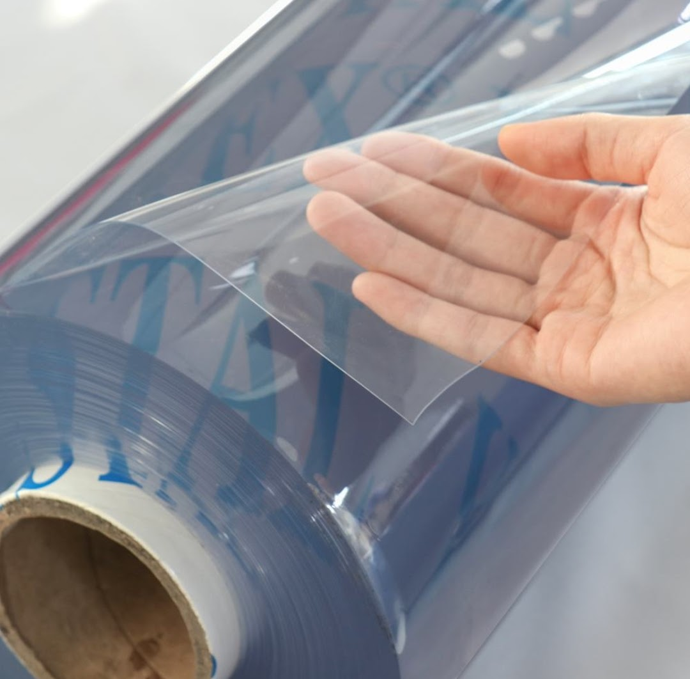
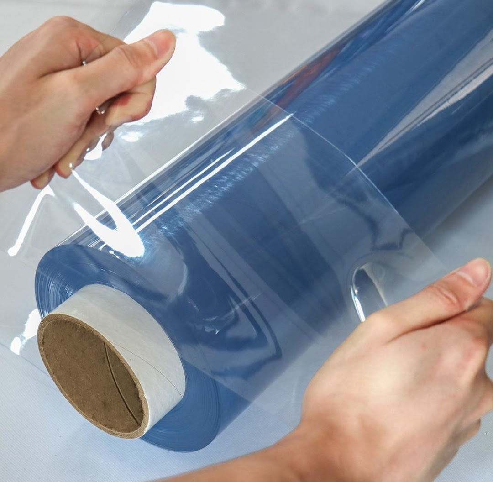
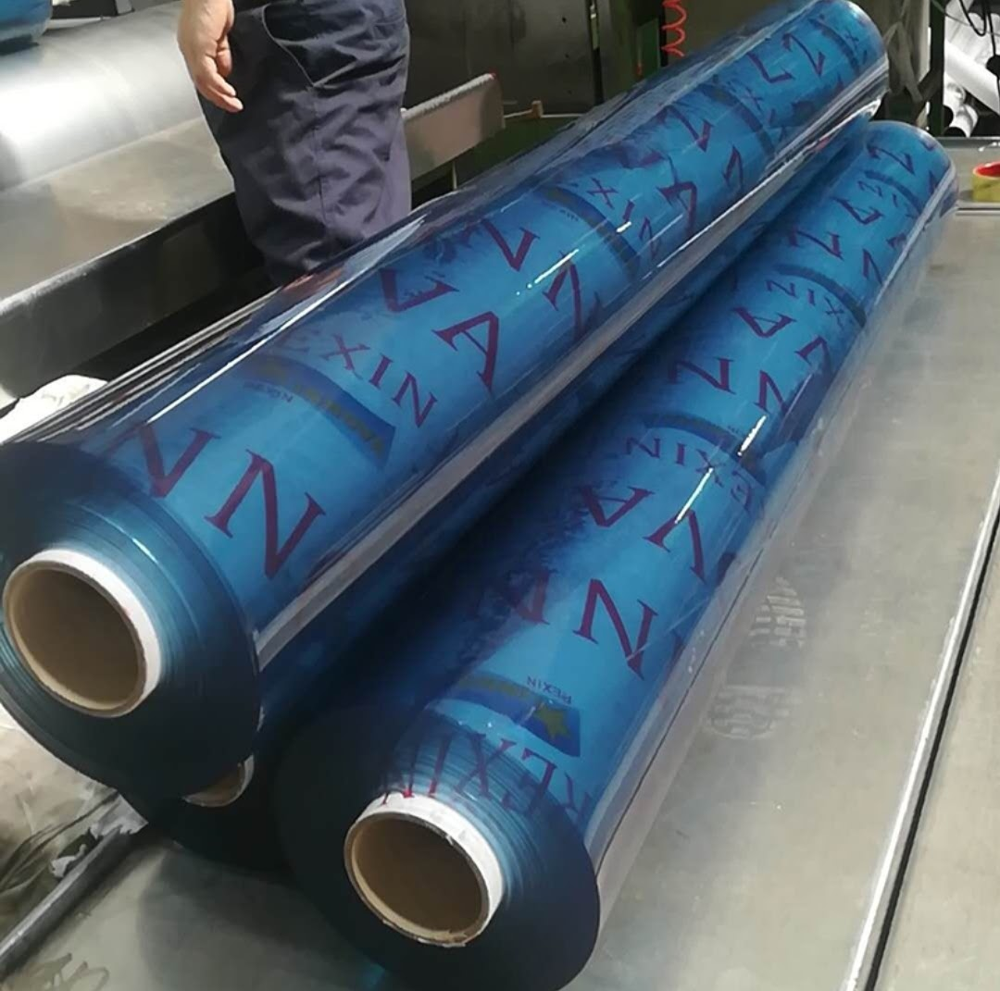
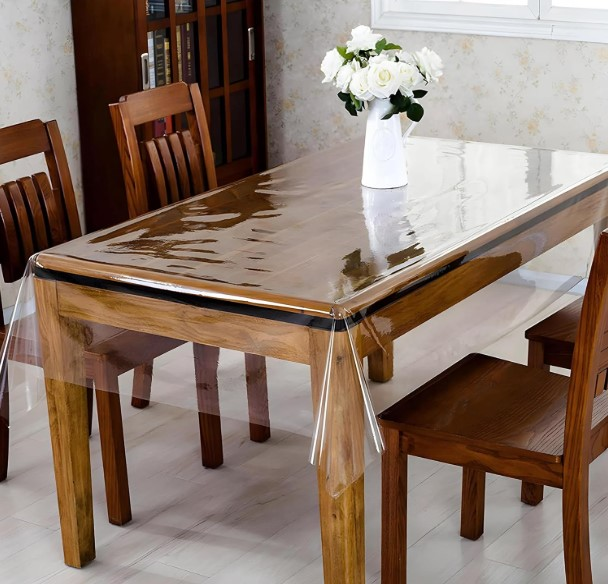

Product Overview
PVC Clear Sheets are flexible, transparent plastic sheets
widely used where visibility and protection are required
simultaneously.
These sheets offer good clarity, durability, and resistance
to moisture, making them suitable for stitching, covering,
and partitioning applications in industrial environments.
Key Features
- High transparency and smooth surface finish
- Flexible and easy to stitch or weld
- Good resistance to moisture and dust
- Available in multiple thickness options
- Suitable for indoor and semi-outdoor use
Specifications
- Material: Polyvinyl Chloride (PVC)
- Form: Rolls or cut sheets
- Thickness: Multiple microns available
- Transparency: Clear / Transparent
- Usage: Covering, partitioning, and stitching
Applications & Use Cases
- Tarpaulin windows and side curtains
- Industrial machine covers and partitions
- Bag, pouch, and packaging fabrication
- Upholstery and protective coverings
- Dust and splash protection panels
Best Suited For
- Tarpaulin manufacturers for window and visibility panels
- Bag and pouch makers requiring transparent sections
- Upholstery units for protective and decorative covers
- Industrial stitching units handling PVC materials
Selection Note
For Indian manufacturing conditions, PVC sheet thickness
should be selected based on stitching method and end use.
Thicker sheets are preferred for tarpaulin windows and
repeated folding applications, while thinner sheets are
suitable for bags and light-duty covers. Proper needle
selection and stitch spacing help prevent cracking.
Commonly Used Along With
- PVC Tarpaulin Fabric
- Nylon or Polyester Stitching Thread
- Industrial Sewing Machines and Needles
Product FAQs
-
Which thickness PVC clear sheet is suitable for tarpaulin windows?
Medium to higher micron sheets are recommended for tarpaulin windows
to withstand wind pressure, folding, and repeated outdoor exposure.
-
Can PVC clear sheets be stitched on industrial sewing machines?
Yes. PVC clear sheets can be stitched using industrial machines,
provided suitable needles, thread tension, and stitch spacing
are maintained to prevent tearing or cracking.
-
Are PVC clear sheets suitable for outdoor use?
They are suitable for semi-outdoor applications such as tarpaulin
curtains and covers. Continuous direct sunlight exposure may
reduce clarity over long periods.
-
Do PVC clear sheets turn yellow over time?
Slight yellowing can occur with prolonged UV exposure. Selecting
appropriate thickness and limiting continuous sunlight exposure
helps maintain clarity for longer durations.
-
Can PVC clear sheets be heat welded instead of stitched?
Yes. PVC clear sheets are compatible with heat welding methods,
making them suitable for fabrication units using RF or hot-air
welding techniques.
-
Are custom roll widths or cut sizes available for bulk buyers?
Yes. PVC clear sheets can be supplied in custom roll widths,
thicknesses, and cut lengths for bulk and manufacturing requirements.